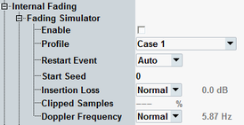

The following parameters allow you to enable and set up the fading simulator. For background information, see "Fading Simulator".

Enables/disables the fading simulator.
Remote command:Selects one of the propagation conditions defined in annex B.2 of 3GPP TS 25.101:
- Multipath fading propagation profiles:
– Case 1 to case 6, case 8 – ITU pedestrian A/B, 3 km/h (PA3, PB3) – ITU vehicular A, 3 km/h / 30 km/h / 120 km/h (VA3, VA30, VA120) - Moving propagation
- Birth-death propagation
- High-speed train
In "Auto" mode, fading automatically starts with the downlink signal. In "Manual" mode, it is started and restarted manually.
Remote command:Sets the start seed for the pseudo-random fading algorithm. This parameter enables reproducible fading conditions.
Remote command:In "Normal" mode, the insertion loss (i.e. the required attenuation at fader input) is calculated based on the currently selected "Profile". In manual mode, it can be adjusted as needed.
A lower insertion loss allows for a higher downlink power but can result in clipping.
Remote command:Displays the percentage of clipped samples.
This information is useful for insertion loss mode "Manual". It allows you to find the lowest insertion loss value for which no clipping occurs.
Remote command:Displays the maximum Doppler frequency. In normal mode, it is resulting from the selected fading profile, in user mode the maximum Doppler frequency is set manually.
Remote command: